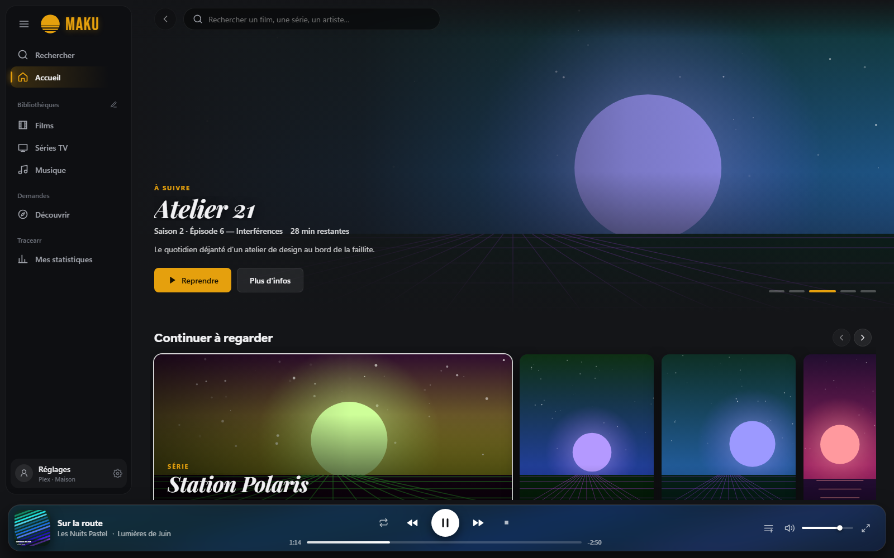
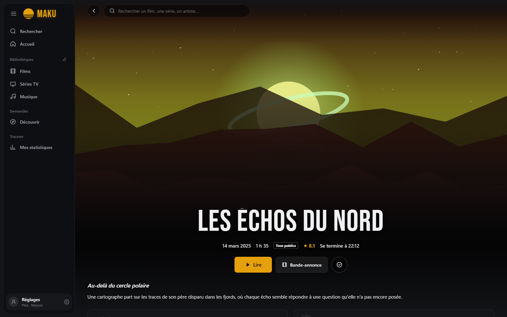
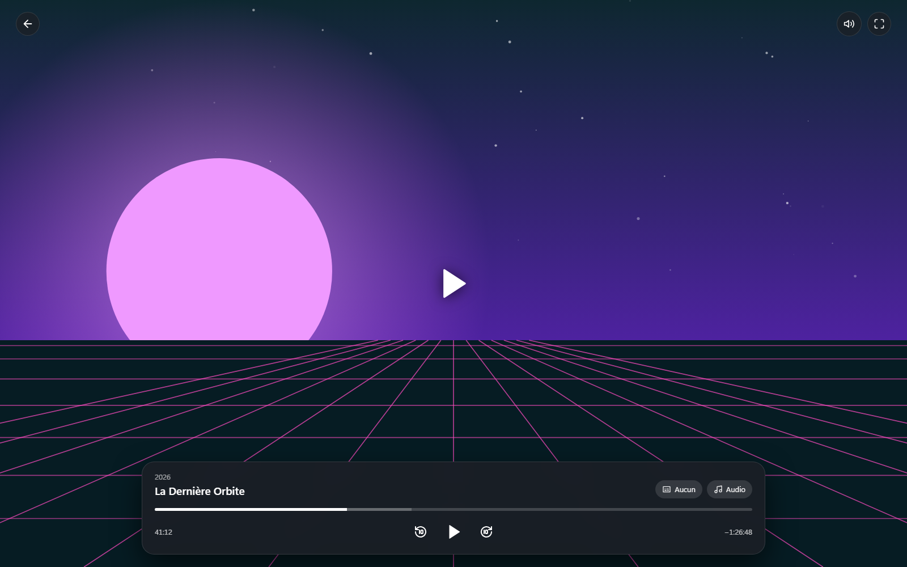
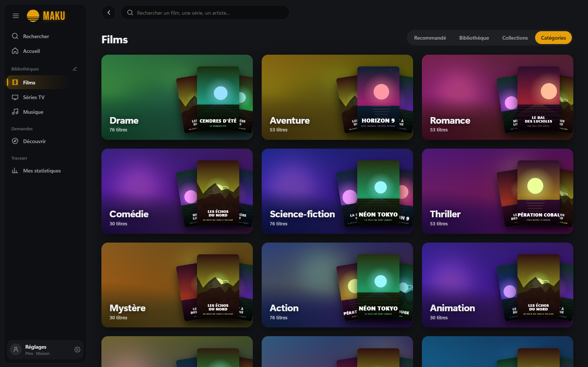
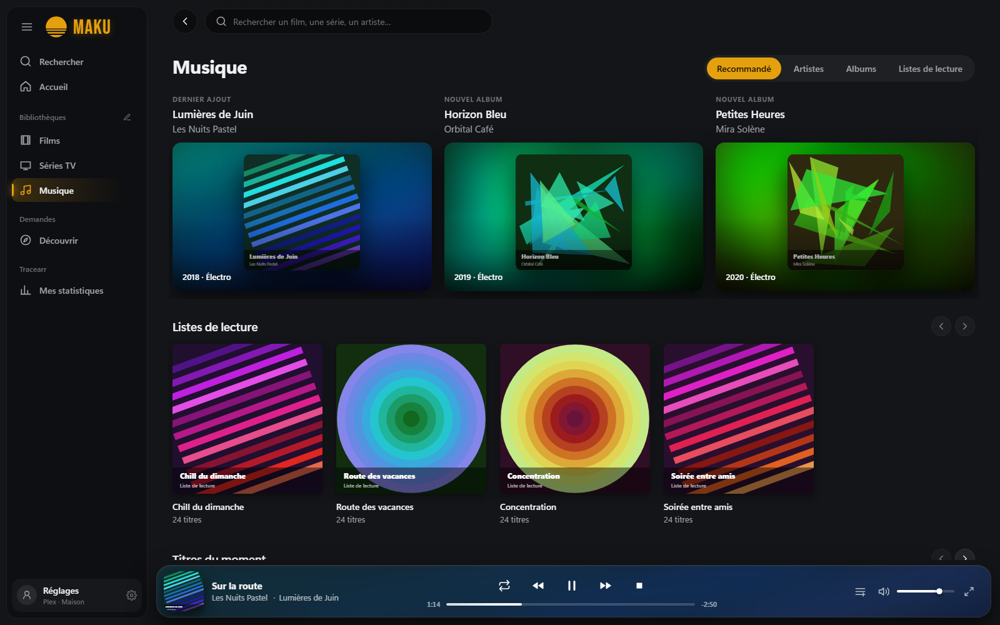
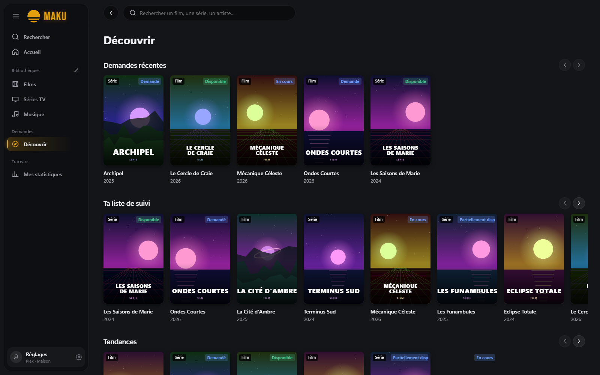
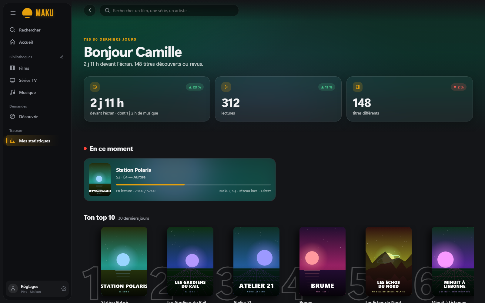

Client Plex · Jellyfin · Emby
Vos films, séries et musiques, comme sur une plateforme de streaming.
Maku est un lecteur libre et gratuit pour vos serveurs Plex, Jellyfin et Emby : grandes affiches, fiches immersives et lecture de presque tous les formats, sur PC, téléphone et TV.
Gratuit · Logiciel libre GPL-3.0 · Sans publicité ni collecte de données

Maku veut dire « rideau » en japonais : celui qui s'ouvre sur la séance. Son logo, un soleil couchant rayé, prend la couleur que vous choisissez dans l'interface.
Tout ce qu'il faut, rien de superflu
Une interface pensée comme celle d'une box TV, et les outils qu'on utilise d'habitude à côté de son serveur, réunis au même endroit.
Il lit (presque) tout
Vidéo lue par mpv sur ordinateur et ExoPlayer sur Android : 4K, HEVC et HDR sans conversion, choix des pistes audio et sous-titres, reprise là où vous vous étiez arrêté.
Vos bibliothèques mises en valeur
Grandes affiches, logos officiels des titres, fiches immersives avec les notes IMDb, Rotten Tomatoes, TMDB et Allociné, catégories colorées et collections.
Une vraie interface musique
Paroles synchronisées, file d'attente, radio d'artiste, enchaînement sans blanc, Chromecast, AirPlay et Android Auto.
Demandes avec Seerr
Découvrez les tendances et les sorties à venir, puis demandez un film ou une saison en un clic, sans quitter l'application.
Statistiques Tracearr
Suivez vos habitudes de visionnage. Tout se fait avec votre compte Plex ou Jellyfin : aucune clé d'API à saisir.
Libre et respectueux
Aucun compte Maku, aucune publicité, aucune collecte : Maku ne parle qu'à vos serveurs. Disponible en français, anglais, espagnol, allemand et néerlandais.
Aperçu
Captures du mode démo : bibliothèque fictive, affiches générées par l'application.






Télécharger Maku
Gratuit sur toutes les plateformes. Choisissez la vôtre.
Windows
Windows 10 et 11. mpv est inclus, rien d'autre à installer.
Microsoft Store Installeur .exe / .msiAndroid et Android TV
Téléphones, tablettes, Android TV et Google TV (Android 7+). La version Google Play arrive bientôt.
Télécharger l'APK Google Play · bientôtFire TV
Une interface dédiée à la télécommande, légère pour rester fluide sur les téléviseurs.
Amazon AppstoremacOS
macOS 11 et plus, Intel et Apple Silicon. Installez mpv avec brew install mpv.
Linux
Paquets RPM (Fedora, RHEL), DEB (Debian, Ubuntu) et AppImage pour les autres distributions.
RPM · DEB · AppImageUn projet libre, fait avec soin
Maku est développé en Rust et Svelte, sous licence GPL-3.0. Une idée, un bug ? Le dépôt GitHub est ouvert à tous.